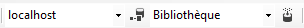

Une connexion à une base de données relationnelle SQL Server permet d'extraire le schéma relationnel de la base

Un élément de menu permet de choisir le serveur, un autre la base de données sur le serveur. Le programme extrait alors la liste des tables et leur structures ainsi que les contraintes référentielles.A partir d'un schéma relationnel, le programme reconstruit le schéma entité-association correspondant. A chaque relation est associé une entité, les couples relations-liens sont traduits en contraintes référentielles et éventuellement en relations.